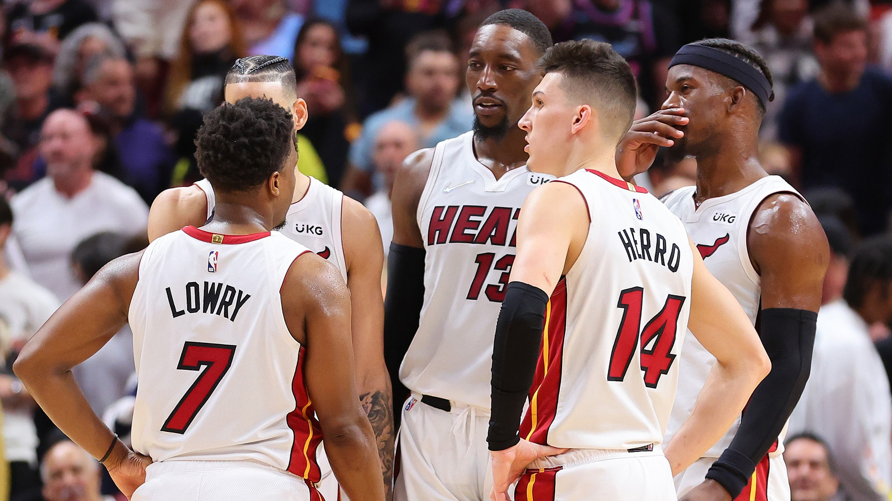
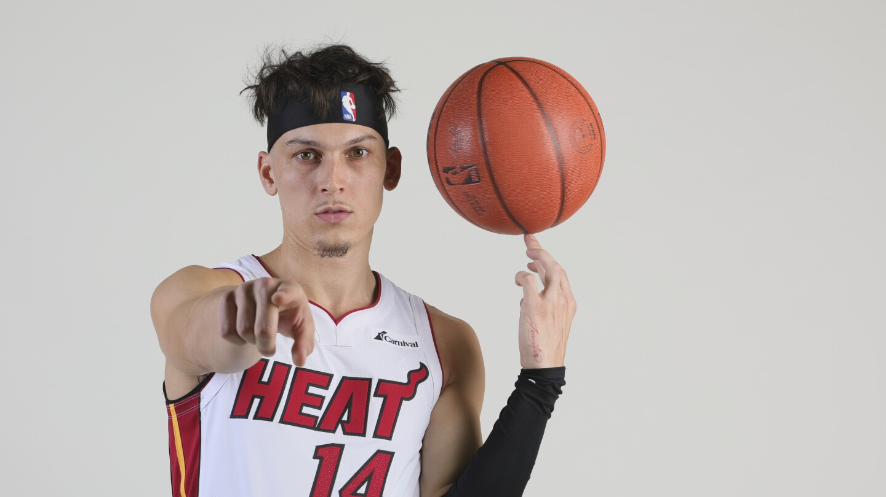

Welcome to the NBA Fan Zone, a dedicated space where my passion for basketball and love for the NBA come alive! As a die-hard Miami Heat fan, I've experienced the thrills, the heartbreaks, and the unforgettable moments that define what it means to be part of Heat Nation.
Miami Heat
From the heart-pounding playoff games to the electrifying atmosphere of the FTX Arena, the Miami Heat are more than just a team to me—they're a way of life. The Heat's legacy of excellence, marked by legendary players and iconic championships, fuels my enthusiasm and loyalty. Whether it's a clutch three-pointer or a game-saving block, every play keeps me on the edge of my seat.

Tyler Herro: My Favorite Player
Among the stars that shine on the Miami Heat roster, Tyler Herro stands out as my favorite player. Known for his sharpshooting, clutch performances, and unwavering confidence, Herro brings a unique energy to the court. His journey from a promising rookie to a key player in the Heat's lineup is nothing short of inspiring. Herro's dedication to his craft and his ability to perform under pressure make him a true standout in the NBA.Among the stars that shine on the Miami Heat roster, Tyler Herro stands out as my favorite player. Known for his sharpshooting, clutch performances, and unwavering confidence, Herro brings a unique energy to the court. His journey from a promising rookie to a key player in the Heat's lineup is nothing short of inspiring. Herro's dedication to his craft and his ability to perform under pressure make him a true standout in the NBA.
